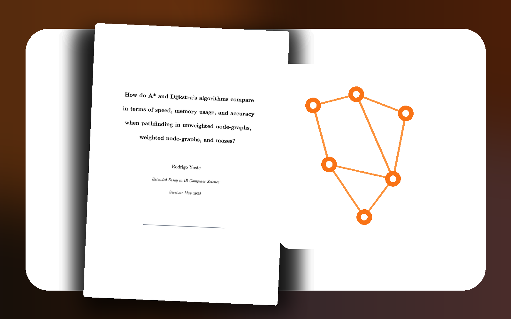
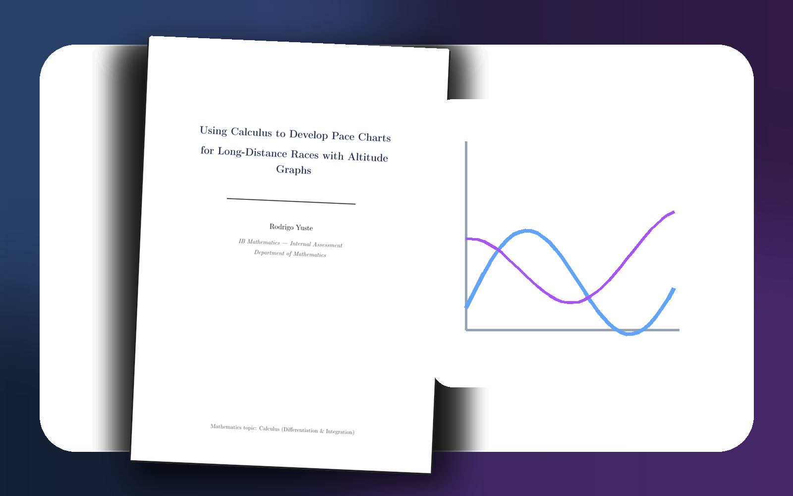
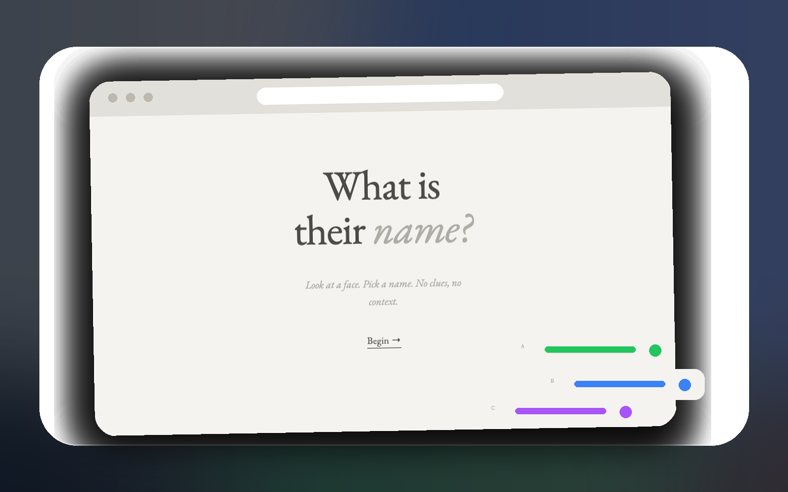
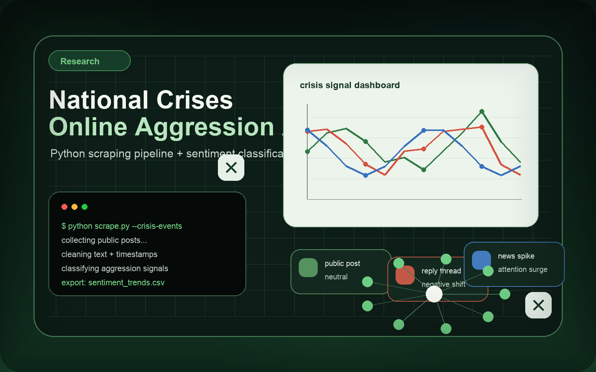

Academic investigations and research papers — algorithms, NLP, linguistics, mathematics, and the internet. If you want to read or cite any of these, reach out.
My IB Extended Essay — a deep investigation into the efficiency of Dijkstra's algorithm for optimising real-world navigation routes. Implemented from scratch, tested on real map data, and measured against competing approaches. One of the pieces of work I'm most proud of.

01 / 06
A research paper and classifier exploring AI-generated text detection. Can a machine learning model reliably distinguish human writing from LLM output? I trained a classifier on a labelled dataset of human and AI-generated text, tested it across multiple contexts, and wrote up the findings. The paper covers methodology, evaluation, limitations, and implications for academic integrity.

02 / 06
IB Mathematics Internal Assessment exploring the mathematical relationship between stride frequency, stride length, and running performance. I collected real data from my own runs and used regression, calculus, and statistical analysis to model optimal running patterns. One of the few IAs I genuinely enjoyed because it combined two things I care about: maths and running.
03 / 06
My IB Extended Essay investigating the efficiency of Dijkstra's algorithm for optimising real-world navigation routes. I implemented the algorithm from scratch, built a test graph from real map data, and compared it against alternative pathfinding approaches. The EE goes deep into time complexity, edge cases, and whether Dijkstra holds up in practice versus theory.
04 / 06
English for Academic Purposes research essay on the sociolinguistic impact of social media on formal writing conventions. Explores how platforms like Twitter/X and Instagram are changing academic and professional language norms — particularly among younger generations. Uses corpus linguistics and discourse analysis to support its claims.

05 / 06
A machine learning experiment to predict a person's cultural or national background from their first name using pattern recognition. Trained a classifier on a multilingual names dataset, using n-gram features and character-level patterns to identify naming conventions across cultures. Surprisingly accurate for common names, and interestingly bad in certain edge cases.

06 / 06
IRS research analysing how national crises instigate aggressive discourse online. I scraped and analysed Twitter/X data around specific events, built a sentiment and aggression classifier, and tracked how rhetoric escalated during crisis periods. The findings suggest a consistent pattern: crises amplify aggression, and it spreads faster than corrections.